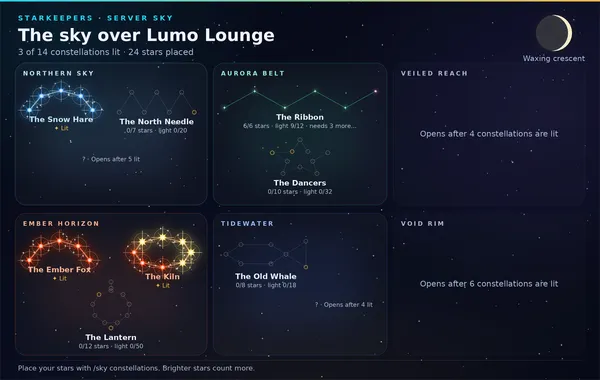

Moonlit Café · sample
Overview
How your server is doing and what to do next.

Starkeepers Beta
On42 stargazers so far. Tonight’s server goal: 7 of 12.
Lumo’s night-sky game. Actively updated: new stars and features land often.
Open the server sky⚠️ Needs attention
Server logs · Fix it
Lumo can’t post in #mod-log. Run /setup status in Discord for the full report.
Setup checklist
4 of 8 done
- Pick a log channelSee joins, leaves, edits and deletes in one private channel.Change
- Welcome new membersA welcome card and message in the channel you choose.Change
- Turn on AutoModRemoves invite links, scam links, mass mentions and spam.Change
- Post level-upsAnnounce level-ups and give level roles. XP works either way.Set up
- Add reaction rolesLet members pick their own roles with a click.Set up
- Give a join roleNew members get a role as soon as they join.Change
- Add color rolesMembers pick a name color for themselves.Set up
- Show today's dateA voice channel renamed to today's date at midnight.Set up
Usage and plan
AI replies today
37 / 100
63 left · resets at midnight ET
Images and videos this month
4 / 15
11 left · resets on the 1st
Premium
Active ✨
A Ko-fi membership you can cancel anytime. Sample: active until Nov 24.
House wallet
✦ 100,184,250
Lumo Coins the house holds in this server
What’s new
Latest updates
- /vote · A new command with a button to vote for Lumo on Top.gg.
- Top.gg votes · Vote for Lumo on Top.gg for 1,000 Lumo Coins, once every 12 hours.
- Starkeepers story · Lumo tells the sky's story in 8 chapters that open as you play.
- Levels · One level per member: /rank, /top and /profile. Level-up posts and roles are opt-in.
Oct 25, 2026 · beta